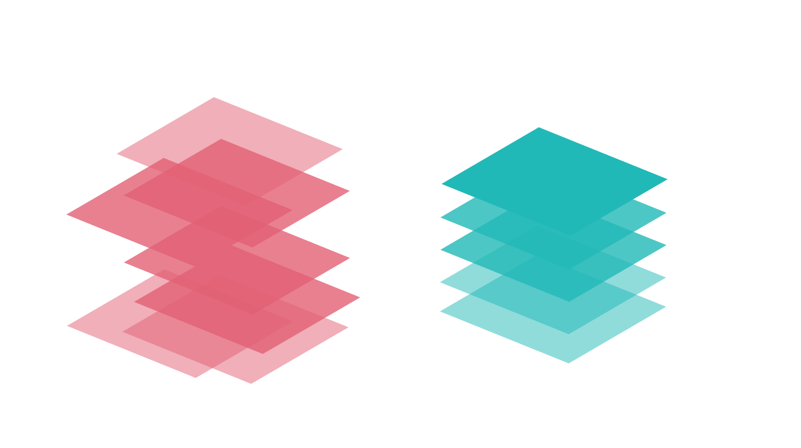

Limit the Number of Pages in a Report
Aim for one to seven pages per report.
The number of pages in your report can influence your audience's perception of the report before viewing it.
- A smaller number of pages can indicate a quick and easy-to-understand report.
- A larger number of pages can indicate a complex report that requires several study sessions.
The fewer pages in a report, the easier it is for your audience to remember content on each of the pages.
If your data story needs more than six or seven pages to tell in its entirety, create multiple reports that each has a few pages. Then, link the primary report to secondary reports, as needed, for additional details.
For example, a report about sales and marketing can have pages about the marketing effort and its effect on sales. The primary report links to two secondary reports: one report with information for the sales audience and another report with information for the marketing team. You can use this same technique to link from a high-level report to target reports with detailed content.

Spreading data across multiple pages in a report - when that data should be kept together - can undercut data comprehension. Focus each page on communicating one point or answering a single question that advances your audience along in your data story.
Be aware that, as your audience members read through the report, their memory and interpretative skills can be overwhelmed. Do not require your audience to remember content from one page to the next. Help them understand what they are viewing by providing titles.
Mobile in Mind
Reports with fewer pages are faster to download on mobile networks, and they open faster, too. Report linking can filter the data shown in the secondary report. The audience members download only the target reports applicable to them. This saves time and device storage.